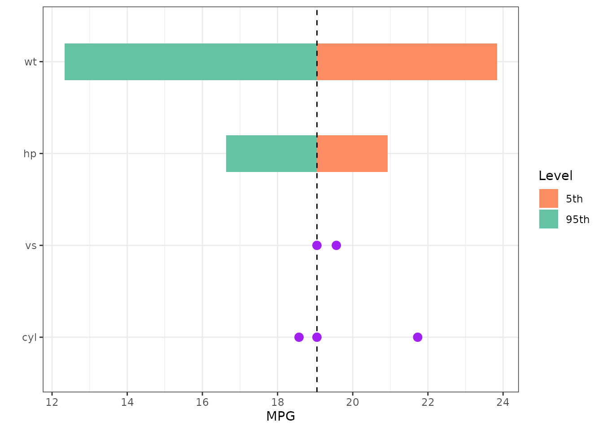
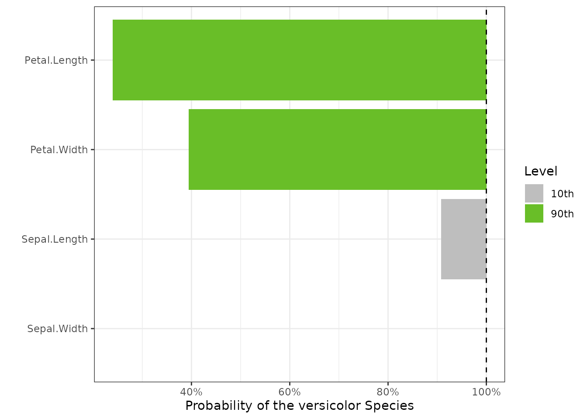
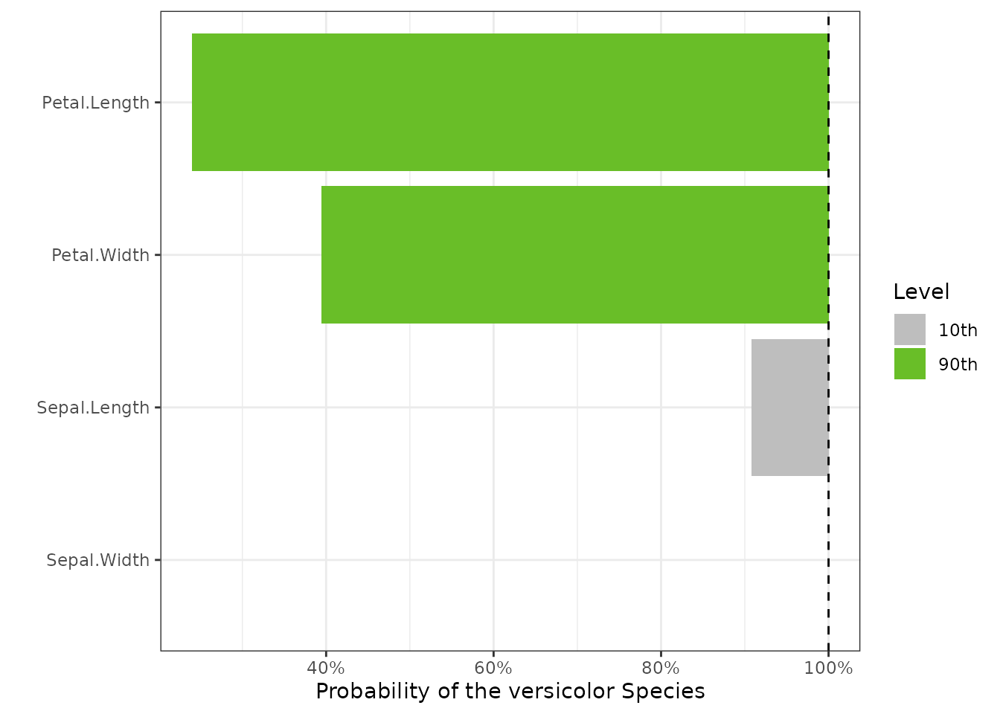
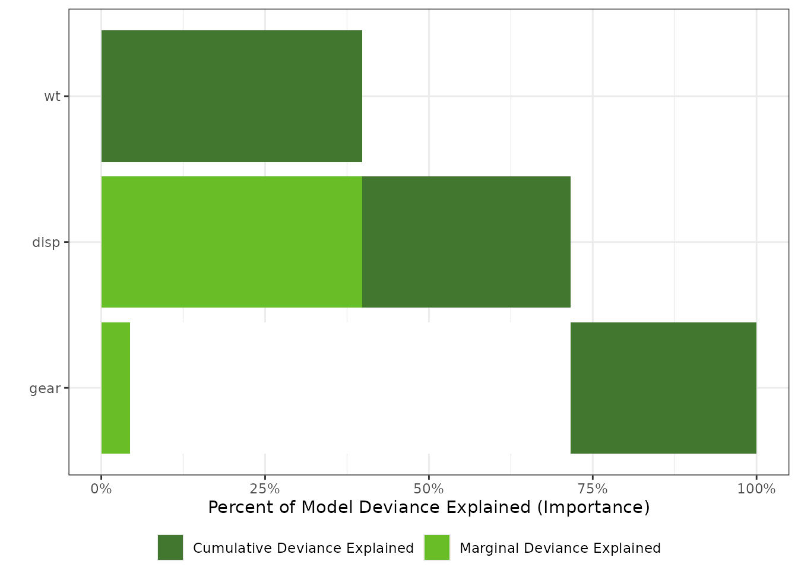
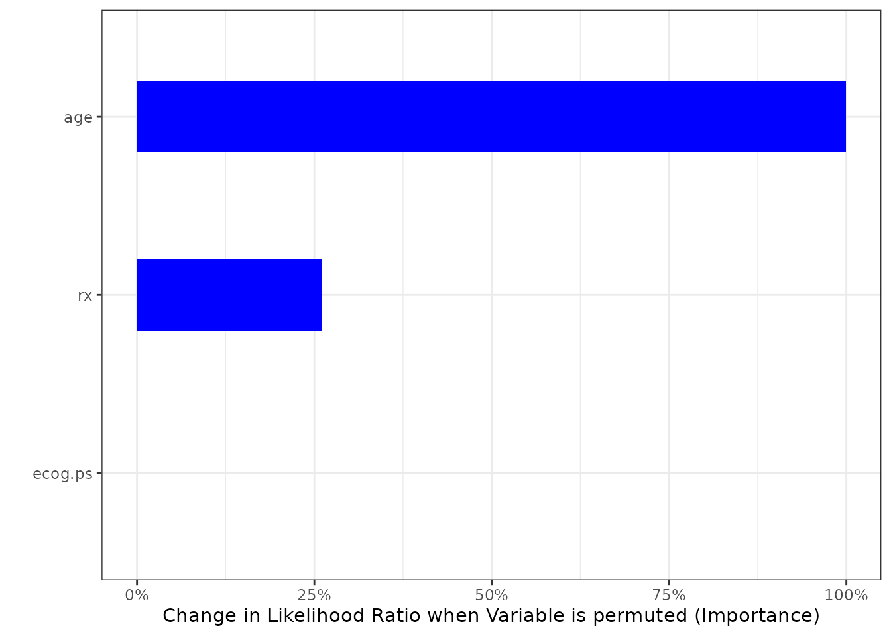
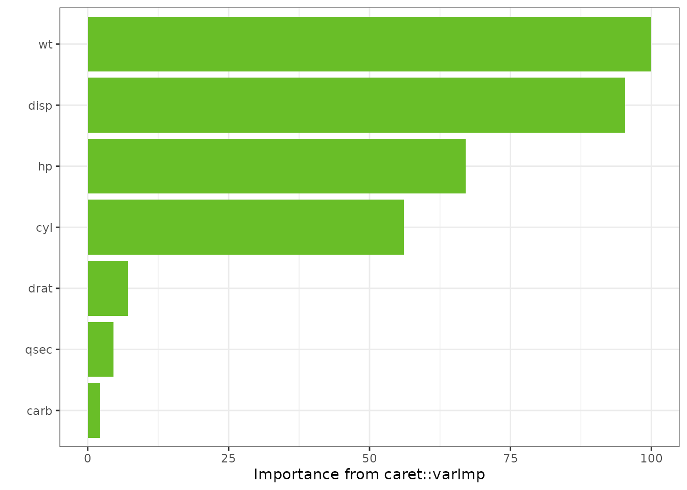

Overview
A tornado plot is a visualization of the range of outputs expected from a variety of inputs, or alternatively, the sensitivity of the output to the range of inputs. Tornado plots have a number of features:
- The center of the tornado is plotted at the response expected from
the mean of each input variable.
- For a given variable, the width of the tornado is determined by the
response to a change in each input variable while holding all others
constant at their mean. Various criteria are used depending on the
specifics of the analysis. Three primary criteria are implemented in
this package:
- The range of the variable. The input is set at the maximum, minimum, and mean.
- A multiplicative factor of the variable mean. The input is set at \(100(1 - \alpha)\)% and \(100(1+\alpha)\)% of the mean.
- A quantile of the variable’s distribution in the input data. The input is set at \(100(1 - \alpha)\) percentile and \(100(1+\alpha)\) percentile
- Variables are ordered vertically with the widest bar at the top and
narrowest at the bottom.
- Only one variable is moved from its mean value at a time.
- Factors or categorical variables have also been added to these plots
by plotting dots at the resulting output as each factor is varied
through all of its levels.
- The base factor level is chosen as the input variable for the center of the tornado when factors are present.
An importance plot attempts to dispay the relative impact of each variable on the model fit. Traditionally, for linear models, the concept of importance was expressed as the percentage of total response variable variance that is explained by each variable, either alone, or in the presence of the other variables in the model. Each model type can have different measures of importance. In this package, the following methods are used:
- Linear Models: percent of the total variance explained by each variable alone and cumulatively with other variables in the model.
- Generalized Linear Models: Same as linear models, but using the deviance instead of the variance.
- Survival Models, LASSO, Ridge Regression: The decrease in model Mean Squared Error as each variable is permuted in the data set. Permuting a varible in a data set remove the explanatory power of that variable relative to the other vriables in the model still correlated with the response variable.
-
caretpackage models: The definition of variable importance for each model in thecaretpackage is taken from thevarImpmethod. See thecaretpackage for specifics.
Data Sets
A few standard data sets are used in these examples:
-
mtcars: Motor Trend Car Road Tests - predict Miles Per Gallon (mpg) based on other car factors -
mtcars_w_factors: themtcarsdataset with a few numeric variables replaced with categorical or factor variables where appropriate. e.g. Automatic vs Manual transmission -
survival::ovarian: Ovarian Cancer Survival Data - predict survival time -
survival::bladder: Bladder Cancer recurrences - risk of bladder cancer recurrence -
iris: Edgar Anderson’s Iris Data - predict the type of iris from measurements
mtcars_w_factors <- mtcars
# Automatic vs Manual
mtcars_w_factors$am <- factor(mtcars$am)
# V or Straight cylinder arrangement
mtcars_w_factors$vs <- factor(mtcars$vs)
# number of cylinders
mtcars_w_factors$cyl <- factor(mtcars$cyl)
# number of forward gears
mtcars_w_factors$gear <- factor(mtcars$gear)
# number of carburetors
mtcars_w_factors$carb <- factor(mtcars$carb)Tornado Plot Examples
LM
type = “PercentChange”
lm1 <- lm(mpg ~ cyl*wt*hp, data = mtcars)
torn1 <- tornado::tornado(lm1, type = "PercentChange", alpha = 0.10)
plot(torn1, xlabel = "MPG", geom_bar_control = list(width = 0.4))
type = “percentiles”
torn3 <- tornado::tornado(lm1, type = "percentiles", alpha = 0.05)
plot(torn3, xlabel = "MPG", geom_bar_control = list(width = 0.4))
Changing Variable Names
dict <- list(old = c("cyl", "wt", "hp", "vs"),
new = c("Cylinders", "Weight", "Horsepower", "V_or_Straight"))
torn5 <- tornado::tornado(lm4, type = "percentiles", alpha = 0.05, dict = dict)
plot(torn5, xlabel = "MPG", geom_bar_control = list(width = 0.4))
Plotting Options
dict <- list(old = c("cyl", "wt", "hp", "vs"),
new = c("Cylinders", "Weight", "Horsepower", "V_or_Straight"))
torn5 <- tornado::tornado(lm4, type = "percentiles", alpha = 0.05)
plot(torn5, xlabel = "MPG", geom_bar_control = list(width = 0.4),
sensitivity_colors = c("#FC8D62", "#66C2A5"),
geom_point_control = list(size = 3, fill = "purple", col = "purple"))
Extending the ggplot
Notes:
- The plot center is at 0 and the x-axis is relabeled. So Adding lines to the plot should use a zero centered coordinate system
- Also, the plot is drawn using coord_flip, so the horizonal line below is draw vertically
g <- plot(torn5, plot = FALSE, xlabel = "MPG", geom_bar_control = list(width = 0.4),
sensitivity_colors = c("#FC8D62", "#66C2A5"),
geom_point_control = list(size = 3, fill = "purple", col = "purple"))
g <- g + ggtitle("Test Plot")
g <- g + geom_hline(yintercept = 0, col = "black", lwd = 2)
plot(g)
GLM
Predict if an engine is a V or Straight given covariates
glm1 <- glm(vs ~ wt + disp + cyl, data = mtcars, family = binomial(link = "logit"))
torn1 <- tornado::tornado(glm1, type = "ranges", alpha = 0.10)
plot(torn1, xlabel = "V or Straight Engine", geom_bar_control = list(width = 0.4))
Censored Data
Surival Regression or Accelerated Failure
survreg1 <- survival::survreg(survival::Surv(futime, fustat) ~ ecog.ps + rx + age + resid.ds,
survival::ovarian, dist = 'weibull', scale = 1)
torn1 <- tornado::tornado(survreg1, modeldata = survival::ovarian,
type = "PercentChange", alpha = 0.10)
plot(torn1, xlabel = "Survival Time", geom_bar_control = list(width = 0.4))
Ridge Regression and LASSO
if (has_glmnet)
{
form <- formula(mpg ~ cyl*wt*hp)
mf <- model.frame(form, data=mtcars)
mm <- model.matrix(form, mf)
gtest <- glmnet::cv.glmnet(x = mm, y = mtcars$mpg, family = "gaussian")
torn <- tornado::tornado(gtest, modeldata = mtcars,
form = formula(mpg ~ cyl*wt*hp),
s = "lambda.1se",
type = "PercentChange", alpha = 0.10)
plot(torn, xlabel = "MPG", geom_bar_control = list(width = 0.4))
} else
{
print("glmnet is not available for vignette rendering")
}
Machine Learning Models
Regression
if (has_caret)
{
gtest <- caret::train(x = subset(mtcars_w_factors, select = -mpg),
y = mtcars_w_factors$mpg, method = "rf")
torn <- tornado::tornado(gtest, type = "percentiles", alpha = 0.10)
plot(torn, xlabel = "MPG")
} else
{
print("caret is not available for vignette rendering")
}
#> Loading required package: lattice
Classification
The plot method can also return a ggplot object
if (has_caret)
{
gtest <- caret::train(x = subset(iris, select = -Species),
y = iris$Species, method = "rf")
torn <- tornado::tornado(gtest, type = "percentiles", alpha = 0.10, class_number = 1)
g <- plot(torn, plot = FALSE, xlabel = "Probability of the Setosa Species")
g <- g + ggtitle("Classifier caret::train 'rf', 10th to 90th perc. of each var.")
plot(g)
torn <- tornado::tornado(gtest, type = "percentiles", alpha = 0.10, class_number = 2)
g <- plot(torn, plot = FALSE, xlabel = "Probability of the versicolor Species")
plot(g)
} else
{
print("caret is not available for vignette rendering")
} 

Importance Plots
Linear Models
gtest <- lm(mpg ~ cyl*wt*hp + gear + carb, data = mtcars)
gtestreduced <- lm(mpg ~ 1, data = mtcars)
imp <- tornado::importance(gtest, gtestreduced)
plot(imp)
Using a dictionary to translate the variable names and chaning colors
dict <- list(old = c("cyl", "wt", "hp", "vs", "gear", "carb"),
new = c("Cylinders", "Weight", "Horsepower", "V_or_Straight", "Num Gears", "Num Carbs"))
imp <- tornado::importance(gtest, gtestreduced, dict = dict)
plot(imp, col_importance_alone = "#8DD3C7",
col_importance_cumulative = "#FFFFB3")
Generalized Linear Models
gtest <- glm(vs ~ wt + disp + gear, data = mtcars, family = binomial(link = "logit"))
gtestreduced <- glm(vs ~ 1, data = mtcars, family = binomial(link = "logit"))
imp <- tornado::importance(gtest, gtestreduced)
plot(imp)
Censored Data
model_final <- survival::survreg(survival::Surv(futime, fustat) ~ ecog.ps*rx + age,
data = survival::ovarian,
dist = "weibull")
imp <- tornado::importance(model_final, survival::ovarian, nperm = 100)
plot(imp, geom_bar_control = list(width = 0.4, fill = "blue"))
Machine Learning
Regression
The number of variables plotted can also be controlled
if (has_caret)
{
gtest <- caret::train(x = subset(mtcars_w_factors, select = -mpg),
y = mtcars_w_factors$mpg, method = "rf")
imp <- tornado::importance(gtest)
plot(imp, nvar = 7)
} else
{
print("caret is not available for vignette rendering")
}
Classification
The plot method can also return a ggplot object
if (has_caret)
{
gtest <- caret::train(x = subset(iris, select = -Species),
y = iris$Species, method = "rf")
imp <- tornado::importance(gtest)
g <- plot(imp, plot = FALSE)
g <- g + ggtitle("Classifier caret::train randomforest: variable importance")
plot(g)
} else
{
print("caret is not available for vignette rendering")
}